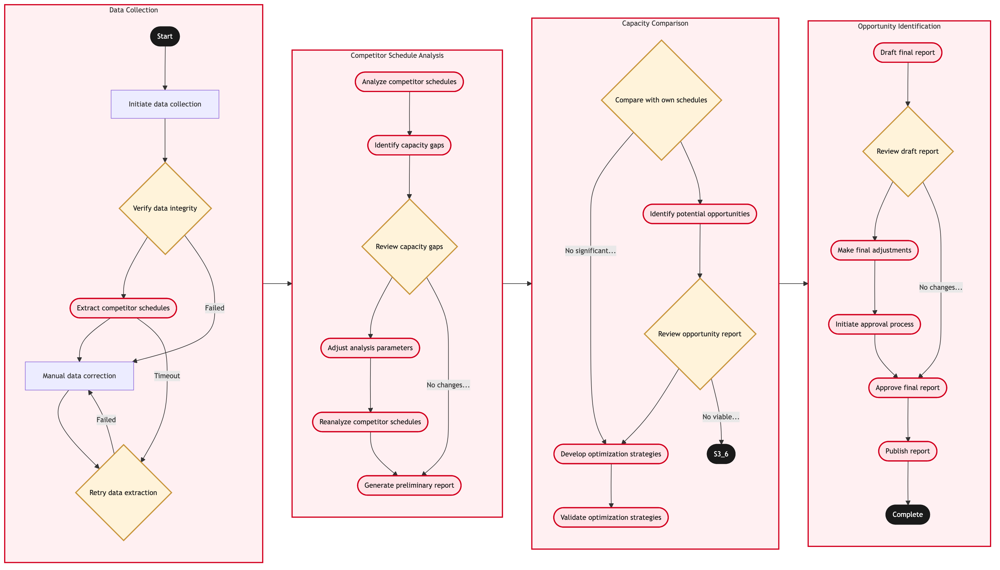

Updated 2026-08-20
Competitor Capacity and Schedule Benchmarking
Process flow
Click to zoom

Process steps
▼
Phase 1 — Data Collection
5 steps
| Step | Activity | Role | System | Input | Output | KPI | Dec | Exc | Pain point |
|---|---|---|---|---|---|---|---|---|---|
| 1.1 | Initiate data collection | Network Planning Analyst | Lufthansa Systems NetLineB | Trigger event (monthly review) | Data extraction from NetLine | Data extracted within 24 hours | N | N | NetLine system slow during peak times |
| 1.2 | Verify data integrity | Network Planning Analyst | Lufthansa Systems NetLineB | Extracted data | Verified data set | Data verification accuracy 99% | Y | N | Data extraction errors due to NetLine system glitches |
| 1.3 | Extract competitor schedules | Network Planning Analyst | Lufthansa Systems NetLineB | Verified data set | Competitor schedule data | Schedule data extracted within 3 hours | N | Y | Slow internet connection affecting data extraction speed |
| 1.4 | Manual data correction | Network Planning Analyst | Lufthansa Systems NetLineB | Failed verification | Corrected data set | Data corrected within 2 hours | N | N | Resource-intensive manual corrections |
| 1.5 | Retry data extraction | Network Planning Analyst | Lufthansa Systems NetLineB | Initial extraction request | Re-extracted competitor schedule data | Data re-extraction success rate 80% | Y | N | System downtime affecting retries |
▼
Phase 2 — Competitor Schedule Analysis
6 steps
| Step | Activity | Role | System | Input | Output | KPI | Dec | Exc | Pain point |
|---|---|---|---|---|---|---|---|---|---|
| 2.1 | Analyze competitor schedules | Network Planning Analyst | Lufthansa Systems NetLineB | Competitor schedule data | Analysis report | Schedule analysis completed within 5 hours | N | Y | Complex schedule analysis due to overlapping routes |
| 2.2 | Identify capacity gaps | Network Planning Analyst | Lufthansa Systems NetLineB | Analysis report | Capacity gap report | Capacity gaps identified within 3 hours | N | Y | Data interpretation challenges due to variable competitor strategies |
| 2.3 | Review capacity gaps | Network Planning Analyst | Lufthansa Systems NetLineB | Capacity gap report | Reviewed capacity data | Data review accuracy 95% | Y | N | Misinterpretation of capacity reports |
| 2.4 | Adjust analysis parameters | Network Planning Analyst | Lufthansa Systems NetLineB | Initial analysis parameters | Adjusted analysis parameters | Parameter adjustment accuracy 90% | N | Y | Complex parameter adjustments |
| 2.5 | Reanalyze competitor schedules | Network Planning Analyst | Lufthansa Systems NetLineB | Adjusted analysis parameters | Reanalyzed schedule data | Reanalysis completed within 4 hours | N | Y | System overload during reanalysis |
| 2.6 | Generate preliminary report | Network Planning Analyst | Lufthansa Systems NetLineB | Reviewed capacity data | Preliminary report | Report generated within 3 hours | N | Y | Data visualization challenges |
▼
Phase 3 — Capacity Comparison
5 steps
| Step | Activity | Role | System | Input | Output | KPI | Dec | Exc | Pain point |
|---|---|---|---|---|---|---|---|---|---|
| 3.1 | Compare with own schedules | Network Planning Analyst | Lufthansa Systems NetLineB | Preliminary report | Comparison data | Schedule comparison accuracy 98% | Y | N | Manual schedule comparison errors |
| 3.2 | Identify potential opportunities | Network Planning Analyst | Lufthansa Systems NetLineB | Comparison data | Opportunity report | Opportunities identified within 2 hours | N | Y | Data mismatch issues |
| 3.3 | Review opportunity report | Network Planning Analyst | Lufthansa Systems NetLineB | Opportunity report | Reviewed opportunities | Review accuracy 90% | Y | N | Complex opportunity review process |
| 3.4 | Develop optimization strategies | Network Planning Analyst | Lufthansa Systems NetLineB | Reviewed capacity data | Optimization strategies | Strategies developed within 4 hours | N | Y | Resource constraints in strategy development |
| 3.5 | Validate optimization strategies | Network Planning Analyst | Lufthansa Systems NetLineB | Optimization strategies | Validation results | Validation accuracy 95% | N | Y | Time-consuming validation process |
▼
Phase 4 — Opportunity Identification
6 steps
| Step | Activity | Role | System | Input | Output | KPI | Dec | Exc | Pain point |
|---|---|---|---|---|---|---|---|---|---|
| 4.1 | Draft final report | Network Planning Analyst | Lufthansa Systems NetLineB | Validation results | Draft report | Report drafted within 3 hours | N | Y | Formatting and layout issues |
| 4.2 | Review draft report | Network Planning Manager | Lufthansa Systems NetLineB | Draft report | Reviewed draft report | Review completed within 2 hours | Y | N | Managerial review time constraints |
| 4.3 | Make final adjustments | Network Planning Analyst | Lufthansa Systems NetLineB | Draft report | Final report | Adjustments completed within 1 hour | N | Y | Resource allocation issues |
| 4.4 | Initiate approval process | Network Planning Manager | Lufthansa Systems NetLineB | Final report | Approval request submitted | Approval request submitted within 30 minutes | N | Y | Delayed approvals |
| 4.5 | Approve final report | Network Planning Manager | Lufthansa Systems NetLineB | Reviewed draft report | Approved final report | Approval completed within 1 hour | N | Y | Managerial approval delays |
| 4.6 | Publish report | Network Planning Analyst | Lufthansa Systems NetLineB | Approved final report | Published report | Report published within 30 minutes | N | Y | System publishing issues |
Swim lanes
Network Planning Analyst1.1 1.2 1.3 1.4 1.5 2.1 2.2 2.3 2.4 2.5 2.6 3.1 3.2 3.3 3.4 3.5 4.1 4.3 4.6
Network Planning Manager4.2 4.4 4.5
Systems touched
Lufthansa Systems NetLineB
Key performance indicators
- Data extracted within 24 hours
- Data verification accuracy 99%
- Schedule data extracted within 3 hours
- Capacity gaps identified within 3 hours
- Parameter adjustment accuracy 90%
Risks and control points
- NetLine system slow during peak times
- Data extraction errors due to NetLine system glitches
- Slow internet connection affecting data extraction speed
- Manual schedule comparison errors
- Data mismatch issues
Air Canada Process Wiki — process and systems reference compiled from public sources
for IT Application Management and User Support pre-sales discovery.
Built 2026-08-21. Every system carries an evidence tier: tier C is an industry pattern and tier U is an open
question, and neither should be asserted as fact about Air Canada without confirmation in discovery.
Not affiliated with or endorsed by Air Canada. Air Canada, Aeroplan and Altitude are trademarks of Air Canada.